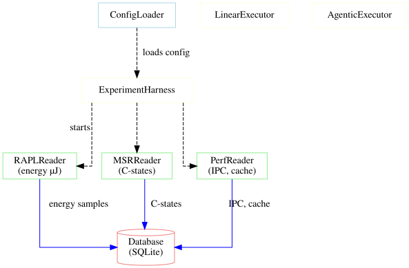

System Architecture¶
This document describes the high-level architecture of A-LEMS, showing the four main layers and how they interact.
🏗️ Architecture Overview¶
A-LEMS is built as a 4-layer system with clear separation of concerns:
- Configuration Layer - Centralized configuration management
- Hardware Layer - Physical sensor reading and measurement
- Execution Layer - AI workflow orchestration
- Database Layer - Persistent storage and data lineage

🧩 Layer 1: Configuration Layer¶
Purpose: Centralized configuration management for all modules.
| Component | Responsibility |
|---|---|
ConfigLoader |
Loads YAML/JSON configs from config/ directory |
Key Config Files:
- app_settings.yaml - Main app settings (DB, sampling, experiment)
- tasks.yaml - Predefined experiment tasks with levels (1-3)
- models.json - LLM model configurations
- hw_config.json - Auto-detected hardware configuration
🔧 Layer 2: Hardware Layer¶
Purpose: Hardware-level data collection with high-frequency sampling.
Readers¶
| Reader | Metrics | Frequency |
|---|---|---|
RAPLReader |
package, core, uncore, dram energy (µJ) | 100Hz |
MSRReader |
C-state counters, ring bus freq | Snapshots |
PerfReader |
instructions, cycles, cache misses | Process-attached |
TurbostatReader |
CPU freq, C-state %, package temp | 10Hz |
SensorReader |
Thermal zone temperatures | 1Hz |
SchedulerMonitor |
Context switches, interrupts | 10Hz |
Core Orchestrator¶
| Component | Responsibility |
|---|---|
EnergyEngine |
Coordinates all readers with perfect synchronization |
Key Features:
- Dedicated sampling thread (configurable, default 100Hz)
- Core pinning for measurement consistency
- Context manager interface (with EnergyEngine():)
🤖 Layer 3: Execution Layer¶
Purpose: Run linear and agentic workflows with perfect measurement alignment.
Executors¶
| Executor | Description |
|---|---|
LinearExecutor |
Single-pass LLM execution without tools |
AgenticExecutor |
Multi-step reasoning with tools (plan → execute → synthesize) |
Core Controllers¶
| Component | Responsibility |
|---|---|
ExperimentHarness |
Main experiment controller (2000+ lines) |
ExperimentRunner |
Shared logic for test scripts |
Phase Timing¶
Agentic workflows track three distinct phases:
- Planning Phase - LLM creates execution plan
- Execution Phase - Tools run based on the plan
- Synthesis Phase - Results combined into final answer
Each phase emits orchestration events for tax calculation.
💾 Layer 4: Database Layer¶
Purpose: Persistent storage with complete data lineage.
Architecture (Adapter + Repository Pattern)¶
The database layer follows two classic design patterns:
Adapter Pattern¶
| Component | Status | Description |
|---|---|---|
DatabaseInterface |
✅ Active | Abstract base class defining database operations |
SQLiteAdapter |
✅ Working | SQLite implementation for local development and single-user deployments |
PostgreSQLAdapter |
⏳ Planned | PostgreSQL implementation for multi-user, distributed deployments |
Repository Pattern¶
| Repository | Purpose |
|---|---|
RunsRepository |
80+ column run insertion and querying |
SamplesRepository |
High-frequency energy, CPU, and interrupt samples |
EventsRepository |
Orchestration events for tax calculation |
TaxRepository |
Tax summary computation and storage |
ThermalRepository |
Thermal sample management |
text
Repository Pattern¶
| Repository | Purpose |
|---|---|
RunsRepository |
80+ column run insertion |
SamplesRepository |
High-frequency samples (energy, CPU, interrupt) |
EventsRepository |
Orchestration events |
TaxRepository |
Tax summary computation |
ThermalRepository |
Thermal samples |
Schema (10+ Tables)¶
| Table | Purpose |
|---|---|
experiments |
Experiment metadata |
hardware_config |
Hardware fingerprints |
environment_config |
Software environment |
runs |
Core run data (80+ columns) |
energy_samples |
100Hz RAPL samples |
cpu_samples |
10Hz CPU telemetry |
interrupt_samples |
10Hz interrupt data |
thermal_samples |
1Hz temperature samples |
orchestration_events |
Agent step tracking |
orchestration_tax_summary |
Per-pair tax calculations |
schema_version |
Migration tracking |
🔄 Data Flow¶
The data flows through the system in a linear pipeline:
- Hardware Layer (
/sys,/proc, MSR registers) -
Raw energy counters, performance events, system metrics
-
Readers Layer (
rapl_reader.py,msr_reader.py, etc.) -
Hardware-specific readers extract raw measurements
-
EnergyEngine
start_measurement()- Begin sampling_sampling_loop()- 100Hz data collection-
stop_measurement()- Finalize measurement -
RawEnergyMeasurement (Layer 1)
-
Immutable raw data stored for reproducibility
-
ExperimentHarness
-
run_linear()orrun_agentic()executes AI workload -
EnergyAnalyzer
compute(raw, baseline)→ DerivedEnergyMeasurement (Layer 3)-
Calculates workload energy, reasoning energy, orchestration tax
-
SustainabilityCalculator
-
calculate_from_derived()→ Carbon, water, methane metrics -
Result Assembly
ml_featuresdictionary with 80+ features-
High-frequency samples (energy, CPU, interrupt)
-
Database Insertion
test_harness.py/run_experiment.pycallsave_pair()-
DatabaseManagervia repositories stores all data -
Persistence
- SQLite database at
data/experiments.db - 10+ tables with complete data lineage
- SQLite database at
🎯 Key Design Patterns¶
| Pattern | Implementation | Purpose |
|---|---|---|
| 3-Layer Architecture | Raw → Baseline → Derived | Scientific rigor, never modify raw data |
| Adapter Pattern | DatabaseInterface → SQLiteAdapter |
Support multiple databases |
| Repository Pattern | RunsRepository, TaxRepository |
Separate data access from business logic |
| Context Manager | with EnergyEngine(): |
Guaranteed start/stop of measurement |
| Function-based Modularity | Small focused functions | Testability, maintainability |
📊 Module Interactions¶
| Module | Responsibility | Key Classes | Interacts With |
|---|---|---|---|
| Module 0 | Configuration | ConfigLoader |
All modules |
| Module 1 | Hardware Measurement | EnergyEngine, all Readers |
Module 3 (provides raw data) |
| Module 2 | Sustainability | SustainabilityCalculator |
Module 3 (consumes derived data) |
| Module 3 | AI Execution | ExperimentHarness, Executors |
Modules 1,2,4 |
| Module 4 | Storage | DatabaseManager, Repositories |
Module 3 (stores results) |
🔧 Extension Points¶
Adding a New Hardware Reader¶
- Create new reader class in
core/readers/ - Implement
read()method returning metrics - Add to
EnergyEngine.__init__ - Update configuration if needed
Adding a New Task¶
- Add task definition to
config/tasks.yaml - Specify level (1-3) and tools
- Task automatically available in GUI and CLI
✅ Architecture Principles¶
- Separation of Concerns - Each layer has a single responsibility
- Immutable Raw Data - Never modify original measurements
- Configuration over Code - Behavior controlled by config files
- Research Reproducibility - Complete data lineage
- Extensibility - Easy to add new readers, tasks, and tools